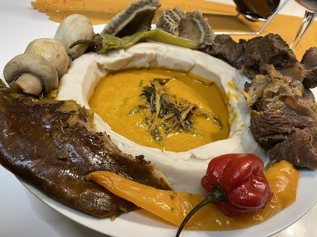

Receipe Taro Made In Cameroun
Home Page

Description
This dish, often called “Achu” or “Taro in Yellow Sauce,” originates from the Grassfields region (North‑West / West Cameroon). The starchy tuber (taro) is cooked, peeled and pounded into a smooth paste (“taro pilé”), then served with a rich yellow sauce made from palm oil, a special blend of traditional spices and sometimes meat or tripe.
The yellow sauce’s distinctive colour comes from palm oil emulsified with water and “sel gemme” (canwa, a kind of alkaline rock) plus local spice blends; the dish is deeply symbolic and frequently featured at major ceremonies and celebrations.
Ingredients
- ~2 kg taro (whole tubers)
- ~1 kg beef tripe or beef with skin or choice of meat.
- ~190 g palm oil (or ~¼ cup depending on scale)
- ~10‑16 g sel gemme (canwa)
- ~1 sachet or mix of “épices sauce jaune” (traditional spice blend)
- 1 L warm water (approx) for sauce dilution
- 4 seasoning cubes (e.g., Maggi)
- 1 chilli pepper (optional)
Steps
- Wash the taro tubers and cook them “en robe des champs” (in their skins) in a large pot of water for around 2 hours, or until fully tender.
- While taro cooks, prepare the meat/tripe: wash, chop and boil with salt, seasoning cubes and any aromatics until tender; reserve the broth.
- Once taro is cooked, peel the skins while still hot and pound (or mash) them into a smooth paste, ensuring no lumps, adjusting moisture if needed.
- To prepare the yellow sauce: lightly heat the palm oil to liquify it; in a bowl dissolve the sel gemme in warm water, then gradually whisk/pour water into the oil to form an emulsion that turns pale yellow.
- Add the spice blend (“épices sauce jaune”), seasoning cubes, chilli (if using) and some of the meat/tripe broth to the sauce mixture; stir gently to combine.
- Incorporate the cooked meat/tripe into the sauce and adjust seasoning (salt, pepper) as needed; simmer briefly to warm through.
- To serve: shape the taro paste into a mound on a plate, then pour the yellow sauce with meat/tripe around or on top; the dish is traditionally eaten with fingers.
Other_Recipe